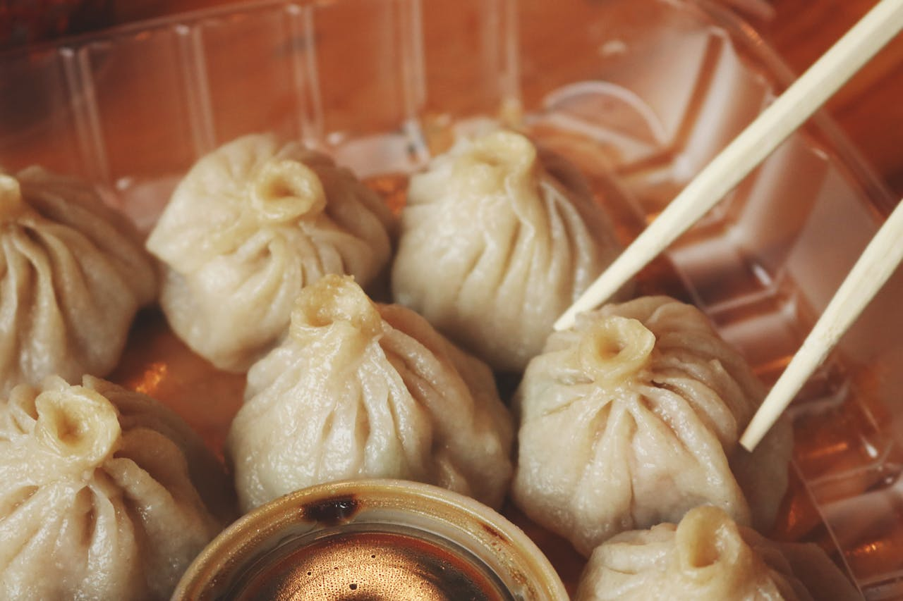

Dumplings

Description
Soft little pockets of joy made from a simple flour dough, filled with seasoned chicken or vegetables mixed with soy sauce, ginger, garlic, and spring onions. Dumplings can be steamed for a delicate, juicy texture, or pan-fried for a crispy bottom with a tender top. They’re versatile, light yet satisfying, and often paired with a tangy dipping sauce.
Ingredients
- 1 cup all-purpose flour
- 1/4 cup water
- 1/2 tsp salt
- 200g minced chicken or vegetables
- 2 tbsp soy sauce
- 1 tbsp ginger-garlic paste
- 2 tbsp spring onion (chopped)
- 1 tbsp oil
Instructions
- Mix flour, salt, and water to form a soft dough. Rest for 20 minutes.
- Prepare filling by mixing minced chicken/vegetables, soy sauce, ginger-garlic paste, spring onion, and oil.
- Roll dough into small discs.
- Place filling in the center, fold, and pleat to seal dumplings.
- Steam dumplings for 10–12 minutes or pan-fry until crispy and then steam with little water.
- Serve with dipping sauce.